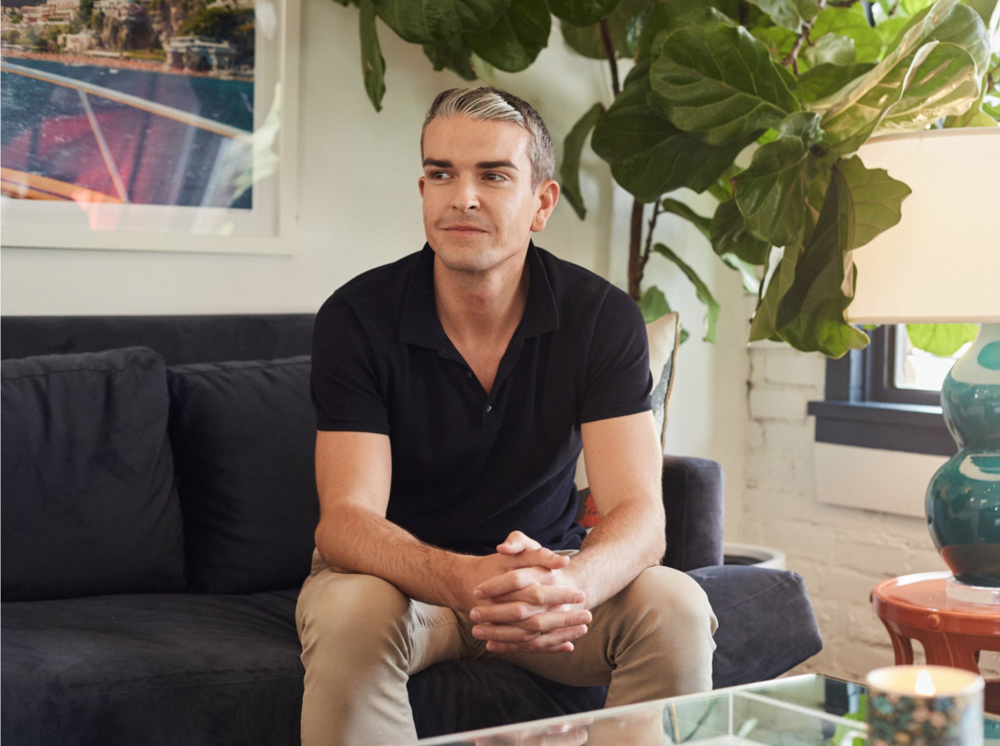
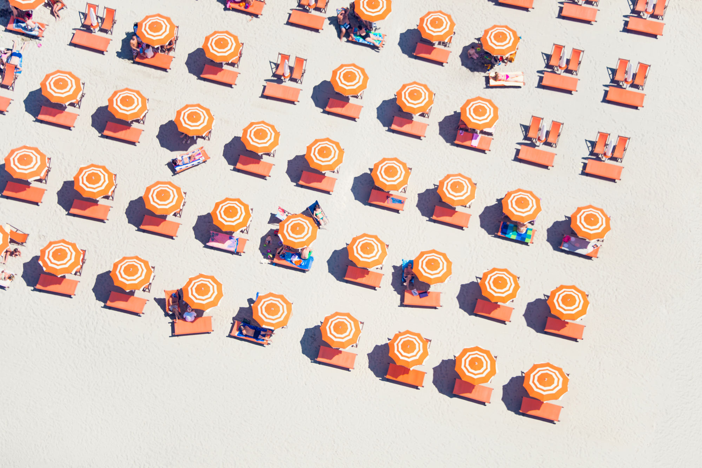
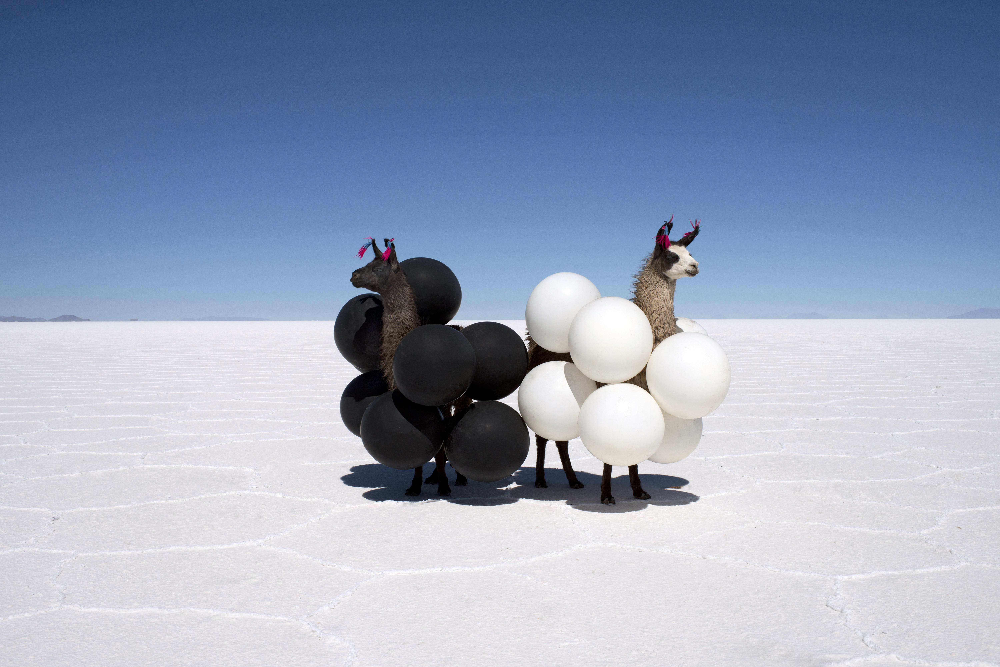
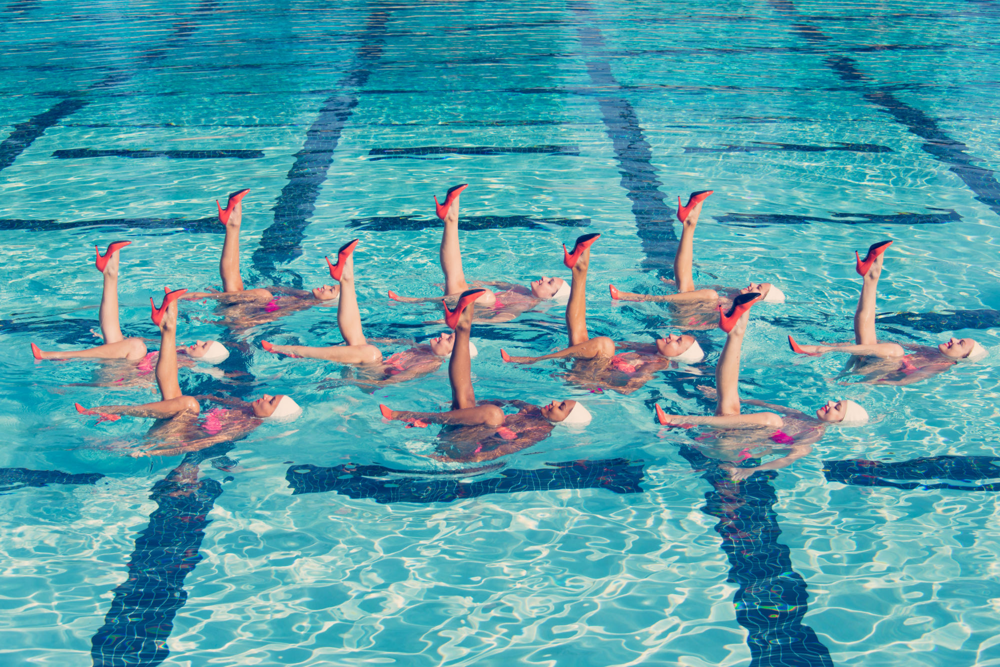

“Honey, doesn’t this look just like a Gray Malin photograph?”
The photographer Gray Malin says he heard an American woman loudly exclaim this to her husband last summer at La Fontelina, a sun-dappled, umbrella-studded beach club in Capri, Italy.
Mr. Malin, 31, was understandably thrilled and introduced himself. “They were on their honeymoon, we took a photo and it was so cute,” he said. “But really, I was just as surprised as she was.”
Then, using a Canon camera, he went back to shooting La Fontelina, the type of place where everyone looks as if they just stepped off a yacht. It is a staple of “La Dolce Vita,” his continuing series chronicling the glamour of the Italian Riviera.
For eight years, Mr. Malin has been churning out pieces that don’t require a background in art to appreciate: balloon-covered llamas on the Bolivian salt flats, brightly hued life preservers floating on top of a pool, balloon letters above a beach that spell “I am busy.” Along with framed prints (priced as high as $18,000), there are Gray Malin water bottles, luggage tags, iPhone covers, sneakers, hotel key cards, beach towels, drink trays and candle holders. There are collaborations with Neiman Marcus and shoots for which brands like Veuve Cliquot and Le Meridien pick up the tab.

The photographer Gray Malin in his Los Angeles studio
Mr. Malin’s rise dovetailed with that of Instagram, where he has more than 231,000 followers, and the platform exposed his work to celebrity fans including Rihanna and Reese Witherspoon. “His beautifully composed aerial images caught my eye,” Ms. Witherspoon wrote in an email. “I love the feeling they evoke of beautiful days in the sun and living a colorful life.”
Like an Amazon algorithm, Mr. Malin has figured out, through every step of his photography career, what his audience liked and then altered his output accordingly.
In 2009, he was selling prints for $65 apiece at flea markets around Los Angeles. “I met and networked and learned what people were looking for in their homes, and if something did resonate, I thought, ‘How can I further develop this work into other work that people will want to hang?’” he said, sitting at an enormous computer monitor in the conference room of his company’s headquarters in West Hollywood, Calif. Outside, a dozen young staff members tapped diligently in front of similarly oversize screens.
“Every photograph I started to take went from photography to fine-art photography to photographs that are meant to look great inside your home,” Mr. Malin said. “It was like social media before social media.”
He is intimately acquainted with such a concept: His mother, Amy Muzzy Malin, edited the interior design sections of Glamour and Mademoiselle magazines before the family moved from New York to Dallas (his father is a real estate developer). In Dallas, Ms. Malin oversaw photo shoots and scouted locations for other magazines, and often brought Gray along.
“I’d do my homework in the corner while they were shooting interiors,” he said. “It’s something I was very aware of, at a young age, how a room looked.”
At 16, he took a high school photography class, spending nights and weekends in the darkroom and studying the clean lines of the Hungarian photographer Andre Kertesz. At Emerson College, Mr. Malin studied photography and marketing, to appease his parents.
After school, he moved to Los Angeles to work in the promotions department of Paramount Studios but quit after a year. He got an internship with David LaChapelle and spent a week watching him shoot a Dos Equis ad. Then he interned with Jill Greenberg, the photographer known for her plasticized-looking portraits of celebrities including Simon Cowell, Arnold Schwarzenegger and Gwen Stefani.

Image from "Italian Geometric" Series
“I realized I didn’t want to do commercial work or portraiture,” Mr. Malin said. “I really wanted to do fine art, which sounds so 21-year-old-y.” He enrolled in continuing-education classes and took odd jobs like assisting on a wedding. “I shot some family in Manhattan Beach’s Christmas card,” he said. “They all wore white shirts and jeans.”
After a teacher asked him to do a humorous photo series, Mr. Malin visited Marfa, the art hub in West Texas that his parents had frequented since he was 13. On a lark, he threw a banana peel on the highway in front of the Prada Marfa installation and took a picture of it. His teacher and classmates loved the shot.
Six months later, in September 2010, he returned to Marfa to do a more organized shoot around the Prada store. His lanky cousin served as a model, his father’s buddy brought a mule, and a friend from Paramount brokered a deal for secondhand Prada shopping bags after Mr. Malin’s eBay searches came up empty. “It’s hysterical how hard it is to get shopping bags,” he said.
Mr. Malin had started on the flea-market circuit in 2009, and when he introduced the Marfa photos, they flew out of his booth. Around the same time, the home goods site One Kings Lane was picking up steam, and Mr. Malin emailed the company to see if it would be interested in selling his work.
“I hadn’t really seen anything like it,” said Susan Feldman, a founder of One Kings Lane.
The site would put up limited quantities of Mr. Malin’s prints and they would routinely sell out; he would invite friends over to watch movies while they slapped labels on boxes. “It was just what I was hoping — I was seeding myself into these somewhat affluent homes all over the country,” Mr. Malin said.
He eventually embarked on more ambitious projects: shooting beach scenes from helicopters over Miami and Kauai, Hawaii, and joining a National Geographic expedition to Antarctica, where he juxtaposed a beach ball with hulking glaciers.

Image from "Far Far Away" Series
At Art Basel Miami Beach, he met the Bolivian photographer Gaston Ugalde (the “Andean Warhol,” according to some critics). Mr. Malin mentioned wanting to stage a shoot on Salar de Uyuni, the world’s largest salt flat, in southwest Bolivia; Mr. Ugalde offered to take him there. “He surprised me, actually,” Mr. Ugalde said. “The first impressions I had of him are very, not fragile, but a very delicate person. It’s surprising to me that he was so great and he had balance and he wasn’t afraid of making the trip on his own to the salt flats.”
But what about the great salt flat of the internet where much art is now promoted and sold? After creating an e-commerce site in 2013, Mr. Malin sought out “on brand” social media influencers, like the model Rocky Barnes, who might be open to hanging a print in their homes and sharing a photo of it on their own feeds.
“Now,” Mr. Malin said, “they really want to get paid.”

Image from "Aqua Glam" Series
Mr. Malin himself is a low-key presence, spending summers on Lake Michigan with his husband, Jeff Richardson, a former business analyst for Mattel and Disney who became the chief financial officer and chief operating officer of Gray Malin last year and oversees pesky things like shipping and logistics.
Mr. Malin wears polo shirts and sweaters around his neck and chooses not to dye gray streaks in his close-cropped hair. At a Vanity Fair party before the Oscars, while sequined starlets swirled around, he gushed that the most exciting week of his life was when Jenna Bush filmed a “Today” show segment on him and Maria Shriver came over to look at prints. “In one week, there was a Kennedy and a Bush in my house,” he said.
As for the current administration, “the day after the election, my dad called me and said, ‘Are you kind of excited about this, for your brand?’” Mr. Malin said. “I was like, ‘Are you kidding? I’m devastated!’”
“‘But think about it, you bring this escape to everyone,” he remembers his father telling him. “‘And now more than ever, people are going to need the escape.’”
Indeed, Mr. Malin’s professional Instagram profile says that he is “on a mission to make every day a getaway.” In the aquamarine-hue feed of photos that follows, there is no indication of political tensions or nuisances like Mondays and hailstorms. If art reflects the times, this art reflects a collective desire to decamp to some place with beautiful natural light and no visible charging cables. While Mr. Malin claims he knows “like, no artists,” some have taken note.
“I get jealous sometimes,” Mr. Ugalde said. “I get jealous in a very positive way. He’s very young, he’s not trying to influence the collector or the observer with big philosophical, conceptual messages. Sometimes, it’s just to make people happy.”